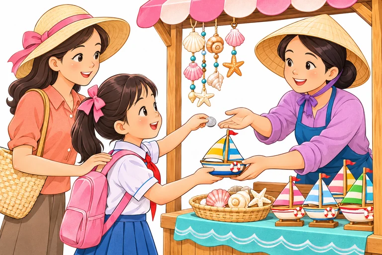

swim
bơi
SWIM
I swam with my family.
Chưa đánh dấu
Unit 11 · Học trước, thử nhớ rồi luyện đề
Kể chuyến đi cùng gia đình: đã làm gì, với ai và khi nào. Có âm thanh đi kèm để thử nghe trên máy của em.
Unit 11 có âm thanh đi kèm (giọng máy Anh Mỹ). Em có thể nghe dù máy chưa cài giọng Anh. Nếu lỗi mạng, bấm nghe lại hoặc chọn giọng thiết bị nếu có.
Bấm Nghe khi em sẵn sàng. Trang không tự phát âm thanh.
Nghe cả từ/cụm, đọc theo rồi dùng ABC để nhớ cách viết. ABC đọc tên chữ cái, không phải bài luyện âm. Với cụm nhiều từ, các nhóm chữ được tách riêng.
Chưa có từ cần ôn. Em chọn một nhóm rồi bấm “Cần ôn lại” ở từ muốn luyện thêm nhé.
bơi
I swam with my family.
Chưa đánh dấu

chụp ảnh
I took photos with my family.
Chưa đánh dấu

nhặt vỏ sò
I collected seashells with my family.
Chưa đánh dấu
đi dạo trên bãi biển
I walked on the beach with my family.
Chưa đánh dấu

đi thuyền quanh vịnh
We took a boat trip around the bay.
Chưa đánh dấu

mua quà lưu niệm
We bought souvenirs.
Chưa đánh dấu
ăn hải sản
We ate seafood.
Chưa đánh dấu
tham quan vài địa điểm thú vị
We saw some interesting places.
Chưa đánh dấu
đã bơi
I swam with my mother.
Chưa đánh dấu
đã chụp ảnh
I took photos with my father.
Chưa đánh dấu
đã mua quà lưu niệm
We bought souvenirs last summer.
Chưa đánh dấu
đã ăn hải sản
We ate seafood last weekend.
Chưa đánh dấu
cuối tuần vừa qua
We took a boat trip last weekend.
Chưa đánh dấu
mùa hè vừa qua
We saw some interesting places last summer.
Chưa đánh dấu
hôm qua
I collected seashells yesterday.
Chưa đánh dấu
vào thứ Bảy
I walked on the beach on Saturday.
Chưa đánh dấu
Nghe hội thoại rồi đọc theo. “Đến lượt em” chỉ đọc A để em nói câu trả lời của B.
A: Did you swim?
B: Yes, I did. I swam with my mother.
Sau did dùng swim; câu kể dùng swam.
A: Did you take photos?
B: No, I did not. I collected seashells.
Did not + take; collected là quá khứ của collect.
A: What did your family do there?
B: We took a boat trip around the bay.
Hỏi did…do; trả lời took.
A: Did you buy souvenirs?
B: Yes, I did. I bought souvenirs with my father.
Buy → bought; with là cùng với.
A: When did your family go there?
B: We went there last summer.
When hỏi thời gian; last summer là mùa hè vừa qua.
A: What did you do on Sunday?
B: I took photos with my brother.
Tách đúng ngày, hoạt động và người đi cùng.
Ví dụ tự soạn. Vị trí và sở thích là giả định theo từng ví dụ. Trang không thu âm hoặc tự chấm giọng của em.
Mỗi nhóm có bốn bài nhỏ, không giới hạn thời gian. Em được sửa rồi thử lại. Câu trả lời tự lưu để quay lại làm tiếp.